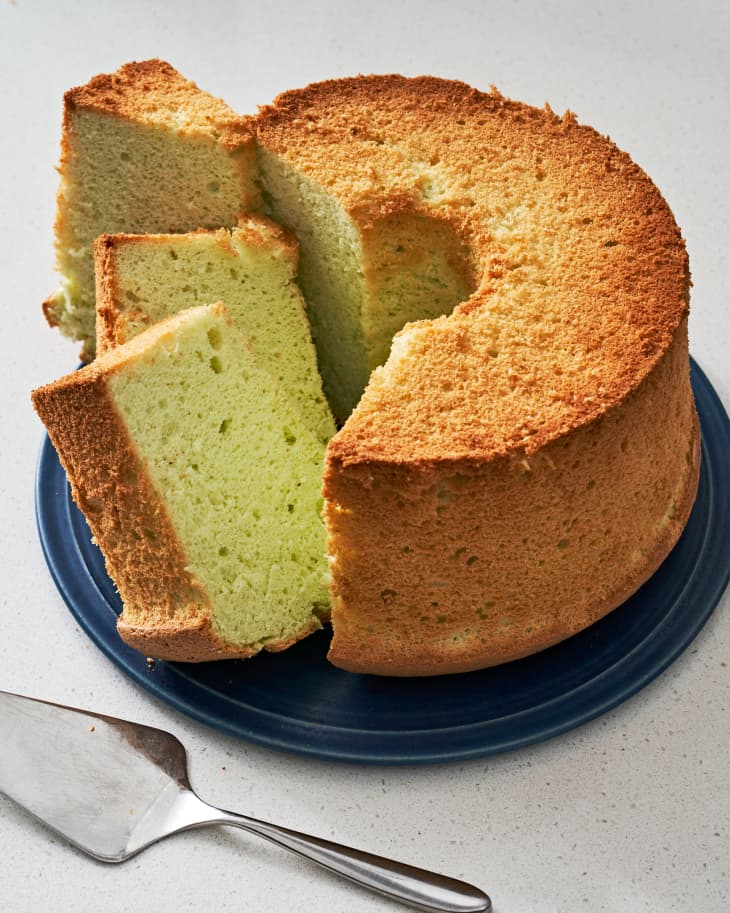

Pandan Chiffon Cake

Description
Pandan — a tropical plant with long, spear-like leaves — infuses this light and fluffy cake with its distinctive herbal flavor, jasmine-like aroma, and light green color. This variation of the chiffon cake is popular in Indonesia, Malaysia, and Singapore, where pandan is plentiful and found in many desserts and drinks.
In the United States, frozen pandan leaves are easier to find than fresh (in most Asian supermarkets). They can also be easier to work with. To extract the juice, give it a quick blitz in a food processor and wring it through a cheesecloth. The fresh stuff is so much more fragrant than bottled pandan extract, which is missing the juice’s delicate herbal flavor.
Ingredients
- 4 ounces thawed frozen pandan leaves (about 50)
- 1/2 cup water
- 10 large eggs
- 2 1/2 cups cake flour
- 1 1/2 cups granulated sugar, divided
- 2 tablespoons unsweetened desiccated coconut (optional)
- 2 teaspoons baking powder
- 1/2 teaspoon kosher salt
- 1/2 cup canned or boxed unsweetened coconut milk
- 1/2 cup grapeseed or vegetable oil
- 1 1/4 teaspoons cream of tartar
Steps
- Thaw 4 ounces frozen pandan leaves if needed. Cut into 1-inch pieces with kitchen shears (about 2 cups). Place in a food processor fitted with the blade attachment. Add 1/2 cup water and process until the leaves resemble grass clippings, stopping to scrape down the sides as needed, about 1 minute total.
- Line a fine-mesh strainer with cheesecloth and fit over a liquid measuring cup. Strain the pandan mixture, squeezing the pulp tightly to extract as much juice as possible. You should have 1/2 to 3/4 cup pandan juice. Let sit at room temperature until the darker green concentrate settles to the bottom, about 30 minutes.
- Meanwhile, separate 10 large eggs, placing all 10 whites in the bowl of a stand mixer (or large bowl if using an electric hand mixer). Place 7 of the egg yolks in a small bowl and reserve the remaining 3 yolks for another use. Let sit until room temperature.
- Carefully pour off and discard the lighter top portion of the pandan juice until you’re left with 1/4 cup of the darker juice.
- Arrange a rack in the lower third of the oven and heat the oven to 325°F.
- Place 2 1/2 cups cake flour, 1 1/4 cups of the granulated sugar, 2 tablespoons unsweetened desiccated coconut if using, 2 teaspoons baking powder, and 1/2 teaspoon kosher salt in a large bowl and whisk to combine. Make a well in the center and add the egg yolks, pandan juice, 1/2 cup coconut milk, and 1/2 cup grapeseed or vegetable oil. Whisk until smooth.
- Beat the egg whites with the whisk attachment on low speed until frothy, about 2 minutes. Add 1 1/4 teaspoons of cream of tartar, increase the speed to medium, and beat until soft peaks form, about 3 minutes. Continue beating and slowly add the remaining 1/4 cup granulated sugar. Increase the speed to medium-high and beat until stiff, glossy peaks form, about 2 minutes.
- Transfer half of the egg whites (meringue) into the batter and gently fold together with a flexible spatula until you see no more streaks. Add the remaining egg whites and gently fold together until just combined, being careful not to deflate the egg whites. Scrape the batter into an ungreased 9 1/2 to 10-inch, 2-piece tube pan and spread into an even layer.
- Bake until the top springs back when lightly pressed and a cake tester or long wooden skewer inserted in the center comes out clean, 55 to 60 minutes.
- Immediately invert the pan and place the tube opening over the neck of a glass wine bottle to suspend the pan. If your pan has feet, you can just flip it upside down and place it on a wire rack or heat proof work surface. Let the cake cool completely in the pan, 1 1/2 to 2 hours.
- Unmold the cake by running a long, thin knife around the sides to loosen the cake (for the neatest cake surface, press the knife against the pan, not the cake, and avoid sawing motions). Grasp the center tube and pull the cake out of the pan. Run the knife along the bottom of the pan and around the center tube to loosen and release the cake. Invert the cake onto a serving plate, flat-side up. Slice and serve.
Back to Home